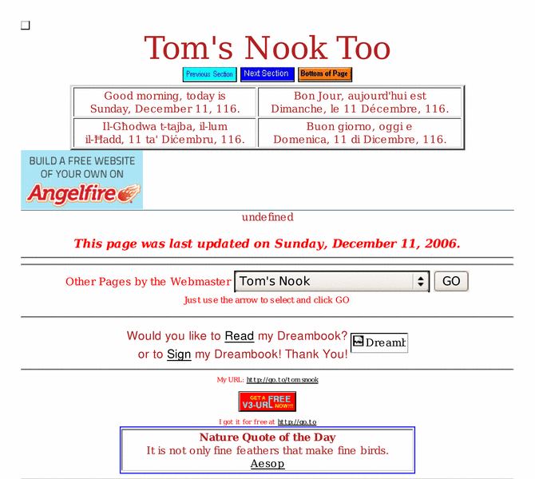

Previewing: Tom's Nook Too Previewing: Tom's Nook Too 
Use the left/right red arrow controls to navigate through this ring - Click the preview image to visit the member site.

An eclectic homepage with something for everyone
Tom's Nook Too owned by:
 toveza toveza
A member of the original webring since 01/08/2002.
|
|